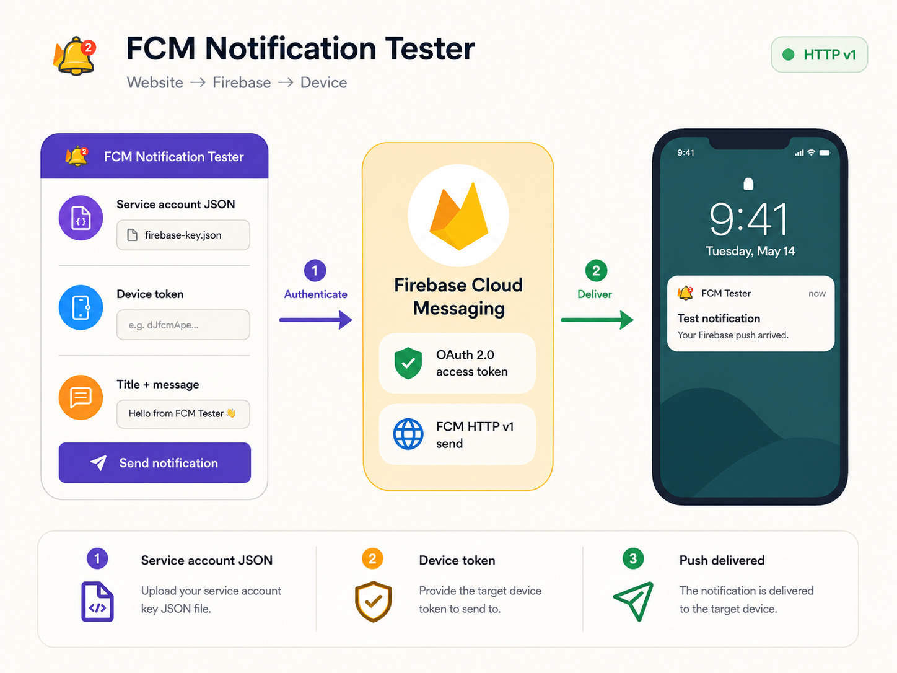

Add the Firebase JSON key
Download a service account private key from Firebase Project settings, then upload or paste it into the tester.
Send a real Firebase push notification in seconds. Upload your service account JSON, paste a device token, add your title and message, then send.

A focused workflow for testing real-device delivery with the current Firebase Cloud Messaging HTTP v1 API.
Download a service account private key from Firebase Project settings, then upload or paste it into the tester.
Use the FCM registration token returned by your Android, iOS, Flutter, or web client.
Add a title, message, or optional custom data. The tool authenticates and sends through FCM HTTP v1.
FCM Notification Tester is built for developers who need a quick way to test Firebase Cloud Messaging without creating a Postman collection or writing a temporary backend script. The tester sends a notification to one FCM device token and supports optional custom data.
The old FCM legacy HTTP send API used a static server key. Modern Firebase sending uses the HTTP v1 API and OAuth 2.0 authorization. This tool reads the project ID and signing credentials from your Firebase service account JSON, mints a short-lived access token on the server, and sends the message to the FCM v1 endpoint for that project.
If a Firebase notification is not showing on your device, check the device registration token, app notification permissions, Android notification-channel setup, APNs configuration for Apple platforms, and the Firebase project associated with the token.
Short practical guides for the most common Firebase notification testing tasks.
From Firebase credentials to a real device test.
AuthenticationWhere the JSON key comes from and how to handle it safely.
Device tokenFind the token your app needs for a single-device test.
HTTP v1Why legacy server keys were replaced by OAuth authorization.
No. The send flow uses Firebase Cloud Messaging HTTP v1 and a short-lived OAuth 2.0 access token created from the supplied service account credentials.
In Firebase Console, open Project settings, then Service accounts, and generate a new private key for a service account you are authorized to use.
It is the FCM registration token generated by the Firebase Messaging SDK for an app installation. Paste that token into the tester to send to that device registration.
Yes. Enter an optional JSON object in Custom data. FCM data values are sent as strings; non-string JSON values are serialized before the request is sent.